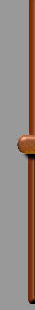
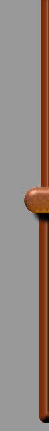
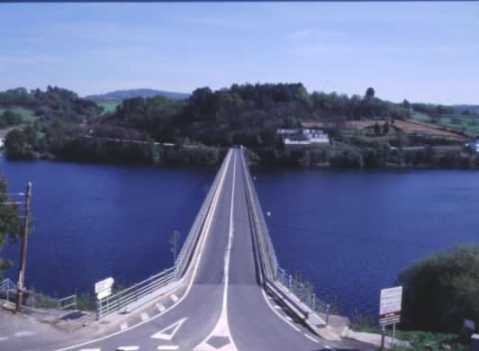
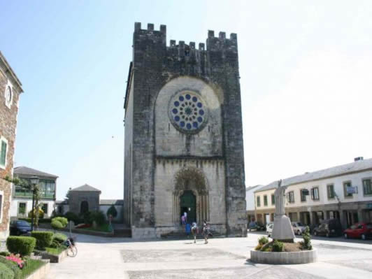

|  |  |
||
|
|||
|  | |
||
|
|||
1ª ETAPA – SARRIA – PORTOMARIN – 22 Km. Aprox. (20 DE JUNIO/2.005)
DESDE EL ALBERGUE LLEGAMOS AL ALTO DE LA CUESTA Y NOS ENCONTRAMOS CON UN CEMENTERIO A NUESTRA DCHA. COMIENZA LA AVENTURA SOBRE LAS 9:30 H.
DESPUES DE LA CUESTA NOS ENCONTRAMOS CON UNA BAJADA MUY PRONUNCIADA, EMPEZAMOS A ENCONTRARNOS PEREGRINOS DE DIFERENTES NACIONALIDADES ANDUVIMOS POR UN SENDERO PEGADO A LA VIA DEL TREN.
IBAMOS DISFRUTANDO DEL PRECIOSO PAISAJE QUE A NUESTROS OJOS SE PRESENTABA
EL CAMINO COMIENZA A PONERSE ABRUPTO, PUENTECITOS SOBRE CHARCAS, PIEDRAS MOJADAS, COMIENZA A MOLESTAR LA MOCHILA

IBAMOS ALTERNANDO ENTRE CARRETERA Y CAMINO DE ARBOLEDAS Y RIACHUELOS, NOS ENCONTRAMOS CON UNAS VACAS QUE IBAN O VENÍAN DE PASTAR Y ESTUVIMOS CAMINANDO ENTRE ELLAS UN RATO

EL AGUA QUE LLEVAMOS SE ACABA, PREGUNTAMOS DONDE PODER LLENAR NUESTRA CANTIMPLORA Y NOS DICEN QUE MAS ADELANTE HAY UNA FUENTE, SEDIENTOS LLEGAMOS A LA MISMA NO SIN PARECERNOS QUE NÓ LLEGÁBAMOS NUNCA, BEBIMOS, RECARGAMOS PILAS Y CONTINUAMOS NUESTRA MARCHA, AL CABO DE UN PAR DE Km. COMENZAMOS A TENER UN POCO DE HAMBRE Y NO APARECÍA NINGUN BAR, POSADA O LO QUE SEA PARA COMER UN POCO, ENTONCES NOS ACORDAMOS DE QUE EN LUGO COMPRAMOS ALGO DE FRUTO SECOS, SACAMOS UNAS PIPAS Y UNAS AVELLANAS PELADAS, COMIENZA UN PAR DE BAJADAS Y SUBIDAS NO MUY PRONUNCIADAS PERO CON EL TERRENO EN MALAS CONDICIONES, FALTANDO UNOS 9 KM. PARA LLEGAR A PORTOMARÍN, NOS ENCONTRAMOS CON UNA POSADA, DUDAMOS ENTRE PARARNOS o CONTINUAR, QUEDABA POCO; PARAR SUPONÍA ENFRIARSE, Y CUESTA ARRANCAR, POR OTRO LADO TOMAR UN REFRESCO Y COMER ALGO ERA TENTADOR, NOS DECIDIMOS POR ESTO ÚLTIMO

Y TRAS PEDIR UNAS CERVEZAS Y REFRESCOS, PEDIMOS UNA EMPANADA PARA 4 Y UN BOCATA DE TORTILLA FRANCESA CALENTITO QUE GUSTOSAMENTE OFRECI, YO SOLO SEGURAMENTE NO ME LO HUBIERA COMIDO, EN LA FOTO NO SE APRECIA BIEN PERO ERA BASTANTE GRANDE.

TRAS ESTA BUENA PARADA, EL SOL EMPIEZA A ASOMAR Y A APRETAR DE LO LINDO, NOS COMENTABA EL SEÑOR DE LA POSADA QUE NO RECORDABAN UN TIEMPO TAN SECO COMO ÉSTE EN LUGO DESDE HACÍA BASTANTE TIEMPO, POR DELANTE NOS QUEDA 9 Km., “EMBUCHADOS” COMENZAMOS DE NUEVO LA CAMINATA Y CONTINUAMOS POR CARRETERA; EL ÚLTIMO TRAYECTO SE HACE INTERMINABLE, NOS ENCONTRAMOS CON UNA SUBIDA MUY PRONUNCIADA Y A CONTINUACIÓN UNA FUERTE PENDIENTE, EL GRUPO SE DIVIDE, CASI LLEGAMOS A PARAR OTRA VEZ, QUEDABA POCO Y ESPERAMOS A LOS RESAGADOS PARA CRUZAR EL PRECIOSO PUENTE SOBRE EL EMBALSE BELESAR DEL RIO MIÑO

LA VISTA ES INMEJORABLE, SUDOROSOS TUVIMOS LA TENTACION DE BAÑARNOS EN DICHO EMBALSE.
UNA VEZ CRUZADO EL PUENTE, FOTO DE RIGOR A LA ALTURA DE UNAS ESCALINATAS


DONDE SE DIVIDE EL CAMINO A LA IZDA. CONTINUA EL CAMINO DIRECCIÓN PALAS DE REY Y HACIA LA DCHA. DIRECCIÓN AL ALBERGUE DE PORTOMARÍN, EXHAUSTOS LLEGAMOS UN POCO TARDE AL ALBERGUE, PREGUNTAMOS POR EL SELLO DE LA CREDENCIAL Y POR LAS CAMAS Y NOS DIJERON QUE SELLÁRAMOS MAS TARDE Y PARA ALOJARNOS TENÍA QUE SER ENFRENTE DEL ALBERGUE PRINCIPAL QUE ESTABA COMPLETO; UN COLEGIO ADAPTADO PARA DORMIR, NOS ACOMPAÑAN Y QUEDABAN UNAS 10 LITERAS LIBRES; DE LAS CUALES NOS ASIGNAN CINCO CASI EN MEDIO DE UNA HABITACIÓN DONDE APROXIMADANTE HABIAN UNAS 40 LITERAS.

DEJAMOS NUESTRAS MOCHILAS ENCIMA Y FUIMOS A DARNOS UNA RECONFORTANTE DUCHA, TRAS LA CUAL DECIDIMOS IR A PICAR ALGO (ALGUNA QUE OTRA TAPA) YA QUE LA COCINA YA ESTABA CERRADA, POR LA TARDE DIMOS UNA VUELTA POR ESTE PRECIOSO PUEBLO, PEQUEÑO PERO CON UNAS VISTAS Y UNAS CASAS IMPRESIONANTES, DOS ITALIANAS SE PRESTARON PARA HACERNOS UNAS FOTOS, TAMBIEN UNA DANESA


ASI FUÉ TRANSCURRIENDO EL TIEMPO HASTA LLEGAR A LA CENA, DONDE NOS SIRVIERON EL FAMOSO MENÚ DEL PEREGRINO (ESPAGUETIS DE 1º Y TERNERA CON PATATAS EN EL 2º, DE POSTRE TARTA HELADA.)
EMPIEZA A REFRESCAR EL TIEMPO Y DECIDIMOS ACOSTARNOS PRONTO PARA COMENZAR LA SIGUIENTE ETAPA A LAS 7,15 DE LA MAÑANA.
CONTINÚA EN EL APARTADO 2ª ETAPA.
(CUALQUIER COMENTARIO SOBRE ESTA ETAPA NO DUDES EN ESCRIBIRME) PULSA SOBRE EL BUZÓN.